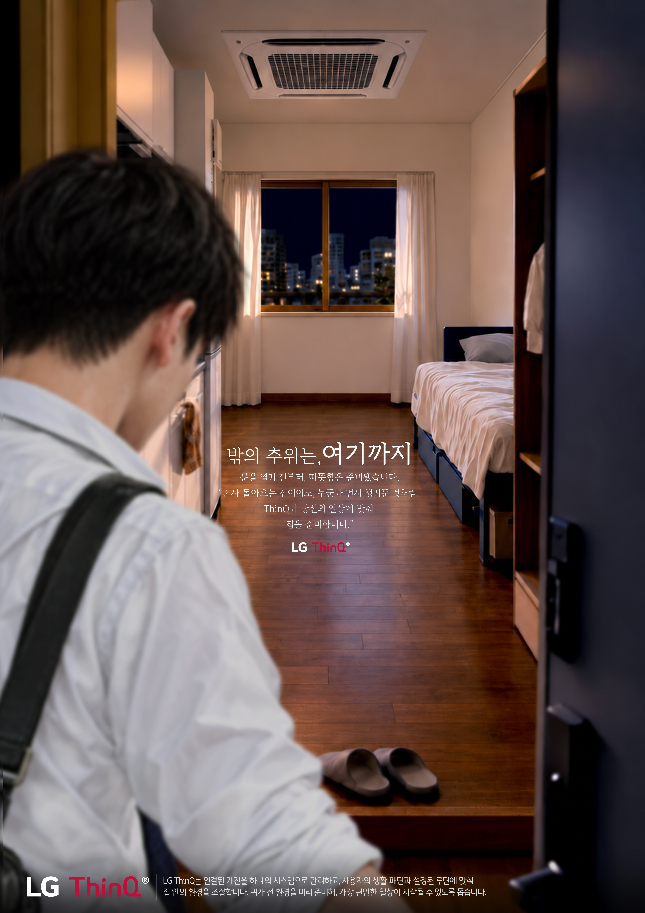
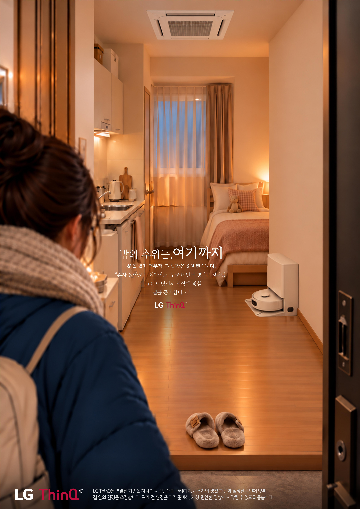

overview
무더운 하루를 보내고 집으로 돌아온 순간, 문을 열기 전부터 이미 쾌적한 환경이 준비되어 있다는 경험을 표현한 LG ThinQ 광고이다. 혼자 생활하는 1인 가구의 익숙한 귀가 장면을 통해, ThinQ가 단순히 가전을 제어하는 기능을 넘어 사용자의 생활 패턴에 맞춰 일상을 미리 준비해주는 존재라는 점을 전달하고자 했다.

overview
추운 겨울날 집으로 돌아왔을 때, 비어 있는 공간임에도 누군가 먼저 온기를 준비해둔 듯한 순간을 담은 LG ThinQ 광고이다. 따뜻한 조명과 미리 조성된 실내 환경을 통해 혼자 사는 집에서도 느낄 수 있는 안도감과 배려의 감정을 표현했다. 사용자의 귀가와 생활 리듬을 고려해 집을 준비하는 ThinQ의 역할을 '밖의 추위는, 여기까지'라는 카피와 연결하여, 기술이 만들어내는 편안함을 일상 속에서 전달하고자 했다.